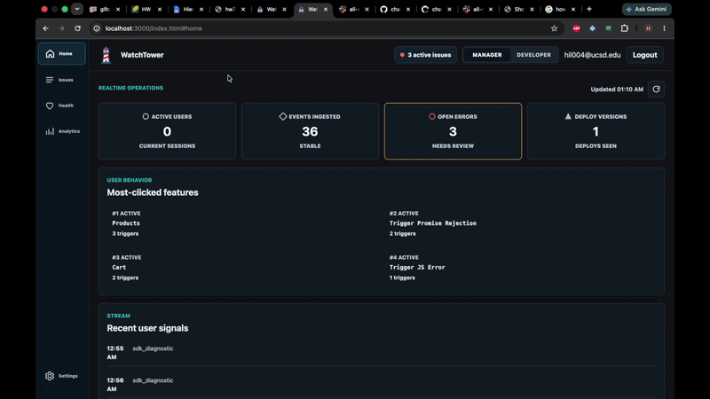
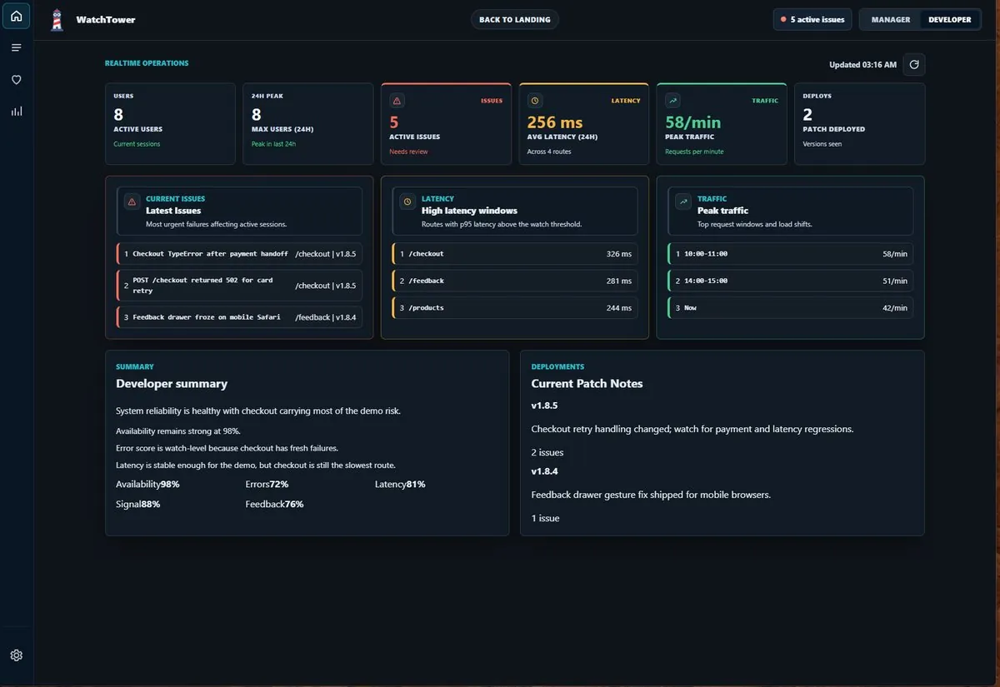
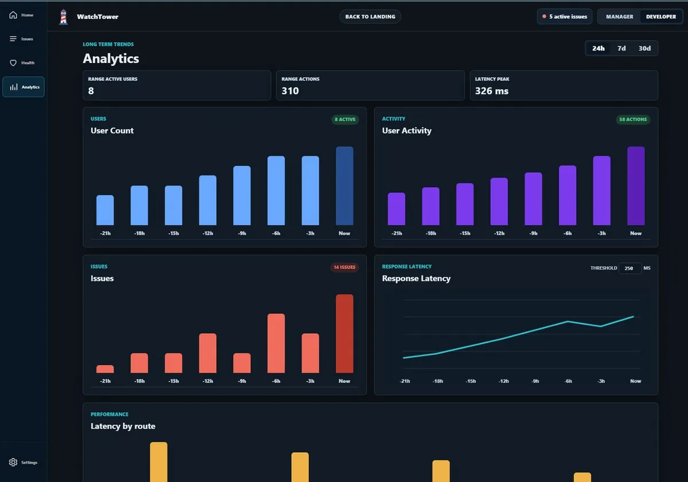

WatchTower
Eleven developers, one repository, ten weeks. The project where I learned how teams actually ship.

Why this project is on an embedded portfolio. It isn't here for the domain — WatchTower is a web observability platform and nothing about it is firmware. It's here because it's the only project on this site built by eleven people, and everything I know about working at team scale came from it: Git under real contention, code review, CI gates, and agreeing on an architecture with ten other opinions in the room. Those are the parts of the job that don't change when the target changes.
The problem
Web teams can't see what's happening in production — which errors real users hit, which routes are slow, what breaks after a deploy.
The commercial answers are heavy agents and vendor lock-in. WatchTower is a lightweight alternative: a dependency-free browser SDK you drop into any page, streaming errors, interactions and performance metrics to a Node backend that persists to Postgres and renders a live per-user dashboard.
Approach
The team's decision that mattered most was prototyping before committing. Rather than argue about features in the abstract, we built throwaway versions and looked at them. I built those prototypes — three of them across the project — and each one existed to answer a question the team was stuck on.
Prototype 1 established the shape: an SDK, a demo app to instrument, a server to receive events, and a dashboard to display them. Once that existed, the feature argument became concrete. People stopped describing what they wanted and started pointing at what was missing.
Architecture
External monitored app ── embeds SDK ──▶ Node backend ──▶ Supabase / Postgres
│
▼
Dashboard (Clerk-authenticated,
data scoped per user)
A separate test application, deployed to GitHub Pages, existed purely to generate telemetry against the real backend — errors, clicks, route changes — so the dashboard had something live to display and the SDK had a genuine integration target rather than a mock.
What I did, honestly
I was one of eleven, and I want to be precise about scope: 20 commits of 513. I was not a lead and I did not own the backend or the database.
Three prototypes
Prototype 1 in early May, prototype 2 mid-month, prototype 3 in June. This was my main role and the thing the team leaned on me for — build the rough version so a decision becomes possible.
The original SDK
Prototype 1's watchtower.js was a dependency-free browser agent: it generates a session ID, hooks unhandled errors and performance timings, queues events with metadata, and flushes on a 2-second interval rather than sending per-event.
WatchTower.prototype._enqueue = function (type, data) {
this._queue.push({
type, timestamp: new Date().toISOString(),
sessionId: this.sessionId, deployVersion: this.deployVersion,
route: location.pathname, data,
});
};That queue-and-batch pattern is the one honest technical bridge to the rest of my work — it's the same shape as buffering sensor readings and publishing on an interval instead of per-sample, for the same reason: the transport cost dominates and batching amortises it.
The developer view
The dashboard surface aimed at developers rather than general users, plus analytics work — including latency-by-route, which is the metric a developer actually opens the tool to see.
Review, not just authorship
I merged three PRs from other people's branches. Reading someone else's work carefully enough to approve it turned out to be a different skill from writing my own, and a harder one to fake.
Hard parts
CI found a real security flaw in my code, and I fixed it
I wrote the SDK's session ID generator the obvious way:
return 'sess_' + Date.now().toString(36) + '_' + Math.random().toString(36).slice(2, 10);CodeQL, running automatically on the pull request, flagged it: insecure randomness. Math.random() is not cryptographically secure and is seedable and predictable in some engines. A session identifier built from a timestamp plus predictable randomness is a session an attacker can guess, which for a telemetry platform means guessing your way into someone else's data.
The fix:
const bytes = new Uint8Array(8);
window.crypto.getRandomValues(bytes);
const randomSuffix = Array.from(bytes, b => b.toString(16).padStart(2, '0')).join('');
return 'sess_' + Date.now().toString(36) + '_' + randomSuffix;I'm keeping this one because the loop is complete and it's all in the record: I wrote the flaw, an automated gate caught it before merge, and I fixed it in the same PR. Before this project I thought of CI as the thing that tells you tests failed. It's also the thing that catches the class of mistake you don't know enough to look for yet.
"Use a CSPRNG for anything identifying" is a rule that transfers directly to firmware, where predictable session tokens, nonces and keys are the same vulnerability with worse consequences.
Eleven people, one repository
513 commits and 9 branches across 22 contributor identities in ten weeks. The mechanics I'd never had to learn on a three-person team:
Branch discipline. Feature branches per work item, because eleven people committing to main is not a workflow. |
| Merge conflicts as routine. Not a crisis, just a cost of the day — and one that shrinks when people scope their branches narrowly. |
| Review as a queue. Work sits until someone reads it, which changes how you write it. Small, legible PRs get merged; large ones rot. |
| CI as a gate, not a report. Repository structure checks, HTML validation, CSS validation, Jest unit tests and Playwright end-to-end tests. Red CI meant nothing moved. |
Agreeing on an architecture with ten other opinions
The genuinely hard part wasn't technical. Deciding how the SDK should hand events to the backend meant reconciling people who wanted different things, some of whom were more experienced than me. Prototypes helped more than arguments did. It's much easier to disagree productively about something you can both run.
Results
The team took first place.
The platform shipped working: SDK, backend on Render, Postgres persistence via Supabase, Clerk-authenticated dashboard, error grouping, latency-by-route, deploy-version tracking, and a separate hosted test app generating live telemetry.


What I took from it
Prototyping is a decision-making tool, not a coding stage. The three prototypes weren't practice runs. Each one existed to end a debate, and they worked because a running artifact settles arguments that words don't.
Small PRs get merged; big ones rot. The most useful habit I picked up, and the one I'd carry into any team regardless of what it's building.
Automated review catches what you don't know to look for. The CodeQL finding is the concrete example. I couldn't have caught that by being careful, because I didn't know the rule.
I'd want to own something closer to the metal next time. I was useful here and the team was better for the prototypes, but front-end work isn't where I'm strongest or where I'm heading. The value I took from this was almost entirely about process, and that's an honest thing to say about a project rather than a reason to dress it up as something else.
Intelligent Fingerprint Wallet
Looking for a firmware engineer?
I'm open to full-time embedded and firmware roles.